Алгебраїчні порівняння з однією змінною
- Якщо НСД(a;m)=1, то порівняння ax == b mod m
- Якщо НСД(a;m)=d ( d >1) і d не ділить b, то порівняння ax == b mod m
- Якщо НСД(a;m)=d ( d >1) і d ділить b, то порівняння ax == b mod m
- Скільки розв'язків має порівняння 7x == 3 mod 23 ?
- Скільки розв'язків має порівняння 7x == 3 mod 28 ?
- Скільки розв'язків має порівняння 7x == 14 mod 28 ?
Алгебраїчні системи і алгебри
- Закон, за яким двом (різним чи однаковим) елементам [i]a[/] і [i]b[/] множини , взятим у певному порядку,
ставиться у відповідність однозначно визначений елемент даної множини, називають
- бінарною алгебраїчною операцією, заданою на множині
- Якщо кожному елементу множини за певним правилом чи законом ставиться у відповідність єдиний елемент цієї самої
множини, то кажуть, що в даній множинні введено
- Правило, за яким кожній парі див. мал. ставиться у відповідність єдиний елемент у множині називають
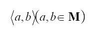
- внутрішнім законом композиців
- Правило, за яким кожній парі див. мал. ставиться у відповідність єдиний елемент у множині називають
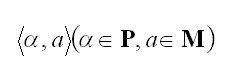
- зовнішнім законом композиції
- Якщо для будь-якого див.мал?
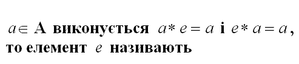
- нейтральним елементом відносно операції *
- Якщо виконується рівність [i][b]a*e=a [/][/] , то елемент [i]e[/] називають
- правостороннім нейтральним елементом відносно операції *
- Якщо виконується рівність [i][b]e*a=a [/][/] , то елемент [i]e[/] називають
- лівостороннім нейтральним елементом відносно операції *
- Нейтральний елемент відносно операції додавання ⊕ називають
- Нейтральний елемент відносно операції множення ⊗ називають
- Якщо для будь-якого а∈А виконується а^'*а=е і а*а^'=е то елемент а^' називають
- симетричним елементу [b][i]aЄА[/][/] відносно операції *
- Якщо виконується рівність [b][i]a'*a=e[/][/] ,то елемент [b][i]a'[/][/] називають
- лівостороннім симетричним елементу [b][i]aЄА[/][/] відносно операції *
- Якщо виконується рівність [b][i]a*a'=e[/][/] ,то елемент [b][i]a'[/][/] називають
- правостороннім симетричним елементу [b][i]aЄА[/][/] відносно операції *
- 14. Елемент множини [b]A[/] , симетричний елементу [b][i]a[/][/] відносно операції додавання [b][i]+ в
колі[/][/], називають
- Елемент множини A, симетричний елементу a відносно операції множення [b][i]x в колі [/][/], називають
- Трійку об’єктів
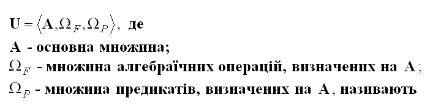
- Двійку об’єктів
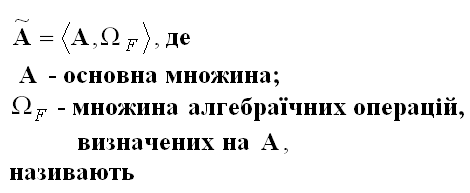
- Двійку об’єктів
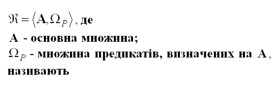
- Якщо множина [b]A[/] - скінченна, то алгебру мал.
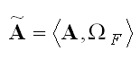
- Алгебру мал. 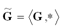 з одною бінарною алгебраїчною операцією *, що визначена на G
називають
- правостороннім нейтральним елементом відносно операції *
- Якщо операція * , що задана на множині G , є додаванням, то групу G[sup]~[/] називають
- Якщо операція * , що задана на множині G , є множенням, то групу G[sup]~[/] називають
- Алгебру мал. з двома бінарними алгебраїчними операціями * і / на К називають

- Два відмінних від нуля елементи множини К , що є носієм алгебри мал. добуток, яких дорівнює нулю, називають
Канонічний розклад цілих чисел
- Якщо найбільший спільний дільник цілих чисел a i b дорівнює одиниці, то ці числа називають:
- Якщо ціле число р відмінне від 0 і +-1 та має дільником лише +-1 і - p, то його називають:
- Ціле число 63 є:
- Ціле число 113 є:
- Якими простими співмножниками утворюється число 252:
- Нехай [b]a[/] і [b]b[/] (див. малюнок),
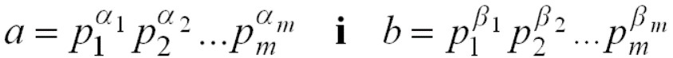
тоді НСД(a,b) обчислюють за формулою:
- Нехай [b]a[/]= p[sub]1 [sup]a[sub]1[/][/][/] і [b]b[/] (див. малюнок),
тоді НСК(a,b) обчислюють за формулою:
- 8. Які значення мають y[sub]i[/] при обчисленні НСД (252,144) з використанням канонічного розкладу чисел?
- Які значення мають y[sub]i[/] при обчисленні НСК (252,144) з використанням канонічного розкладу чисел?
- Яка кількість дільників числа 28?
- Якщо сума дільників числа п дорівнює 2п, то його називають:
- Яке число є сильно складеним ?
- Яка сума дільників числа 8?
- Яке з чисел є досконалим?
- Значенням функція Ейлера числа 15 є:
- Теорема Ейлера стверджує «Якщо НСД(a,n) = 1, то:
- Мала теорема Ферма стверджує: «Якщо р – просте число і а не ділиться на р, то:
- Порівняннями називають відношення типу:
Одномодульна арифметика цілих чисел
- Сума чисел 19 і 34 за модулем 41 дорівнює:
- Сума чисел 9 і 24 за модулем 41 дорівнює
- Різниця чисел 19 і 34 за модулем 41 дорівнює
- Різниця чисел 34 і 19 за модулем 41 дорівнює:
- Яке число є протилежним числу 12 за модулем 29?
- Добуток чисел 34 і 19 за модулем 41 дорівнює:
- Яке число є мультиплікативним оберненим числа 11 за модулем 27?
- Яке число є результатом ділення числа 7 на число 11 за модулем 27?
- Корінь квадратний числа 7 за модулем 19 дорівнює:
Подільність цілих чисел
- Остача від ділення цілих чисел є:
- Яке число є остачею від ділення числа 93 на число 5?
- Різниця двох цілих чисел ділиться на дане число тоді і тільки тоді, коли:
- остачі від ділення зменшуваного і від’ємника рівні між собою
- Сума двох або кількох цілих чисел ділиться на дане число тоді і тільки тоді, коли на це число ділиться:
- сума остач від ділення кожного доданка на дане число
- Добуток цілих чисел ділиться на дане число тоді і тільки тоді, коли на це число ділиться:
- добуток остач від ділення кожного із співмножників на дане число.
- Найбільше ціле число, яке ділить цілі числа a і b називають:
- найбільшим спільним дільником
- Якщо цілі числа a і b одночасно дорівнюють нулю, то:
- Алгоритм Евкліда використовується для:
- визначення найбільшого спільного дільника
- Найбільший спільний дільник чисел 123 і 69 дорівнює:
- Найменше ціле число, яке є спільним кратним цілим числам a і b, називають:
- найменшим спільним кратним
- Якщо хоча б одне з цілих чисел a чи b дорівнює нулю, то:
- Найменше спільне кратне обчислюють за формулою:
- Найменше спільне кратне чисел 154 і 66 дорівнює:
- Процес Гешування полягає у
- Обчисленні характеристик повідомлення
- Приховуванні змісту повідомлень в кодах змінної довжини
- Перетворенні блоків вхідного повідомлення фіксованої довжини в код змінної довжини
- Перетворення вхідного повідомлення довільної довжини
- Дайджестом повідомлення називають
- Останній блок повідомлення
- Електро-цифровий підпис повідомлення
- Контрольну комбінацію бітів, що забезпечує виявлення помилок
- Геш код повідомлення
- Дайджест повідомлення використовується для…
- Контролю цілісності повідомлення
- Безпечного обміну ключами
- Для виправлення помилок, що можуть уникнути в повідомленні
- Прихованої передачі повідомлення іншій стороні
- Колізія це-
- Помилка при гешуванні
- Невідповідність наявної довжини повідомлення довжині, що вказана в коді довжини
- Наявність однакових дайджестів для двох різних повідомлень
- Наявність однакового шифротексту для одного повідомлення зашифрованого на двох різних ключах
- Як називають властивість геш-функції, яка полягає в тому, що для будь-якого даного коду h практично неможливо
обчислити x, для якого H(x) = h?
- Слабка опірність колізіям
- Сильна опірність колізіям
- Односторонність
- Некоректність
- Як називають властивість геш-функції, яка полягає в тому, що для будь-якого х практично неможливо обчислити у,
для якого H(x) = у?
- Слабка опірність колізіям
- Сильна опірність колізіям
- Односторонність
- Некоректність
- Як називають властивість геш-функції, яка полягає в тому, що практично неможливо обчислити будь-яку пару різних
значень х і у, для якого H(x) = у?
- Слабка опірність колізіям
- Сильна опірність колізіям
- Односторонність
- Некоректність
- Який з підходів не використовується для побудови криптографічних геш-функції?
- На основі якої-небудь складнообчислювальної математичної задачі
- На основі алгоритму блокового шифрування
- На основі методів ущільнення даних
- Побудова з нуля
- Який з підходів до побудови криптографічних геш-функції написано нижче? Обчисленн геш-коду G здійснюється у
такий спосіб:
де Н0 – початкове значення, G = HN.
- На основі складнообчислювальної математичної задачі
- На основі алгоритму блокового шифрування
- На основі методів ущільнення даних
- Побудова з нуля
- Який з підходів до побудови криптографічних геш-функції написано нижче? Обчисленн геш-коду G здійснюється у
такий спосіб:
де Н0 – початкове значення, g – примітивний елемент за модулем p, G = HN.
- На основі складнообчислювальної математичної задачі
- На основі алгоритму блокового шифрування
- На основі методів ущільнення даних
- Побудова з нуля
- У схемі Меркля-Дамгарда
ітеративна функція гешування основана на …
- Побайтовому гешуванні
- Поблоковому гешування за допомогою ущільнення
- Підсатновках
- Перестановках
- При гешуванні повідомлення за схемою Меркля-Дамгарда на і-му кроці ітерації за допомогою функції ущільнення
обробляється
- Результат гешування, отриманий на (і- 1)-му кроці
- Результат гешування, отриманий на (і- 1)-му кроці, та і-й блок повідомлення
- Результат гешування, отримані на (і- 1)-му та (і- 2)-му кроках
- Тільки і-й блок повідомлення
- Яку кількість бітів міститиме доповнення вихідного повідомлення, що подається для гешування, якщо довжина
останнього блоку n=512 ?
- Яку кількість бітів міститиме доповнення вихідного повідомлення, що подається для гешування, якщо довжина
останнього блоку n=448?
- Яку кількість бітів міститиме доповнення вихідного повідомлення, що подається для гешування, якщо довжина
останнього блоку n<448?
- Яку кількість бітів міститиме доповнення вихідного повідомлення, що подається для гешування, якщо довжина
останнього блоку 448<n<512 біт?
- Яка довжина коду що дописується до повідомлення і вказує довжину цього повідомлення?
- Яка довжина геш-коду, що формується за алгоритмом гешування МD5?
- Яка довжина геш-коду, що формується за алгоритмом гешування SHA?
01. Найменше з додатних m, для яких виконується am ≡ 1mod n,називають
1) порядком числа a за модулем n
2) мінімальним показником числа a
3) мінмальним показником числа a за модулем n
4) мінмальним показником за модулем n
_
02. Порядок числа 5 за модулем 11 дорівнює
1) 6
2) 4
3) 5
4) 10
_
03. Порядок числа 8 за модулем 11 дорівнює
1) 6
2) 4
3) 5
4) 10
_
04. Числа, порядок яких за модулем n дорівнює φ(т) , називають
1) числами, що належать функції Ейлера
2) числами Ейлера з модулем n
3) показниками Ейлера за модулем n
4) першообразними коренями за модулем n
_
05. Першообразним коренем за модулем 11 є число
1) 6
2) 4
3) 5
4) 10
_
06. Показник степеня i порівняння b ≡ aimod p називають
1) порядком числа a для b за модулем p
2) показником числа a для b
3) показником числа a за моулем p
4) індексом числа b за модулем p при основі a
_
07. Індекс числа 6 за модулем 11 при основі 7 дорівнює
1) 6
2) 4
3) 7
4) 3
_
08. Індекс числа 7 за модулем 11 при основі 6 дорівнює
1) 6
2) 4
3) 7
4) 3
_
Тема: Генератори псевдовіатадкових послідовностей
01. Генератор, що породжує псевдовипадкову послідовність за допомогою рекурентного співвідношення хi+1 =
(axi + c)mod N, i = 0,1,... називають
1) рекурентним генератором
2) лінійнимм конгруентним генератором
3) генератором Фібоначчі
4) рекурсивним генератором
_
02. Генератор, що породжує псевдовипадкову послідовність за допомогою рекурентного співвідношення хi+1 =
axi mod N, i = 0,1,... називають
1) рекурентним генератором
2) мультиплікативним конгруентним генератором
3) генератором Фібоначчі
4) рекурсивним генератором
_
03. Генератор, що породжує псевдовипадкову послідовність за допомогою рекурентного співвідношення хi + 1
= (dxi2 + ахi + c)mod N, i = 0,1,..., називають
1) конгруентним генератором, що використовує множення з перенесенням
2) адитивно-мультиплікативним конгруентним генератором
3) генератором Фібоначі
4) квадратнчнии конгруентним генератором
_
04. Генератор, що породжує псевдовипадкову послідовність за допомогою рекурентного співвідношення xt+1 =
(axt + ct )mod N, t= 0,1, ..., де ct =
сt(xt-1,xt-2,...,хо) змінюється у часі і залежить від аргументів нелінійно,
називають
1) конгруентним генератором, що використовує множення з перенесенням
2) адитивно-мультиплікативним конгруентним генератором
3) генератором Фібоначі
4) квадратнчнии конгруентним генератором
_
05. Генератор, що породжує псевдовипадкову послідовність за допомогою пекурентного співвідношення xi = (xi-1*xі-s)mod
m , i = r, r+1, r+2, ..., де r, s є N (r > s) - параметри генератора; * - символ бінарної операції, називають
1) бінарним конгруентним генератором
2) адитивним конгруентним генератором
3) мультиплікативним конгруентним генератором
4) генератором Фібоначі
_
06. Яке число сформує на п'ятому кроці роботи генератор Фібоначчі xi = (xi-3+xі-1)mod7
з початковими значеннями x0 = 1, x1 = 1, x2 = 3?
1) 5
2) 3
3) 1
4) 2
_
07. Яке число сформує на п'ятому кроці роботи генератор Фібоначчі xi = (xi-2-xі-1)mod7
з початковими значеннями x0 = 1, x1 = 2?
1) 5
2) 3
3) 1
4) 2
_
08. Яке число сформує на п'ятому кроці роботи генератор Фібоначчі xi = (xi-2*xі-1)mod7
з початковими значеннями x0 = 1, x1 = 2?
1) 5
2) 3
3) 4
4) 2
_
09. Яке число сформує на четвертому кроці роботи генератор Фібоначчі xi =
(xi-3+xі-1) з початковими значеннями x0 = (0101)2 = (5)10,
x1 = (1010)2 = (10)10, x2 = (0111)2 = (7)10?
1) 15
2) 17
3) 13
4) 2
_
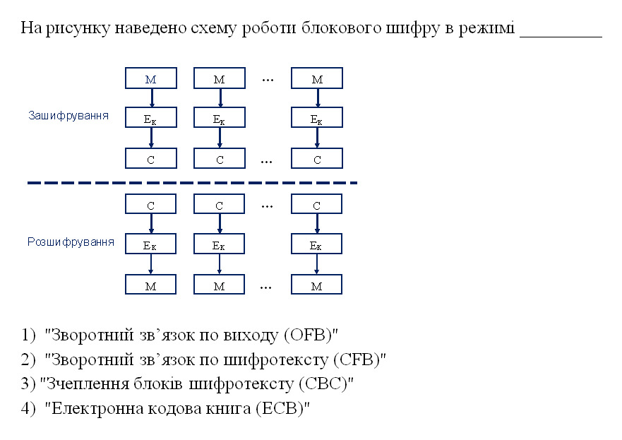
1) "Зворотний зв'язок по виходу (OFВ)"
2) "Зворотний зв'язок по шифротексту (CFВ)"
3) "Зчеплення блоків шифротексту (СВС)"
4) "Електронна кодова книга (ЕСВ)"

1) "Зворотний зв'язок по виходу (OFВ)"
2)"Зворотний зв'язок по шифротексту (CFВ)"
3) "Зчеплення блоків шифротексту (СВС)"
4) "Зчеплення блоків шифротексту (СВС)"
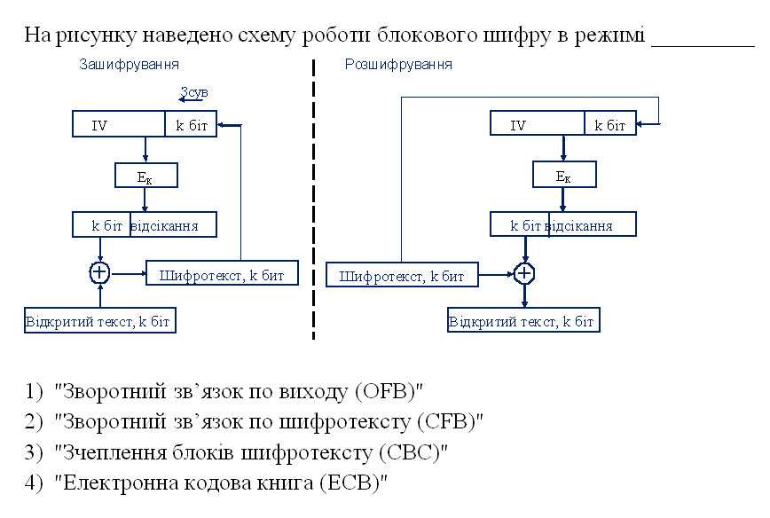
1)"Зворотний зв'язок по виходу (OFВ)"
2)"Зворотний зв'язок по шифротексту (CFВ)"
3) "Зчеплення блоків шифротексту (СВС)"
4) "Електронна кодова книга (ЕСВ)"
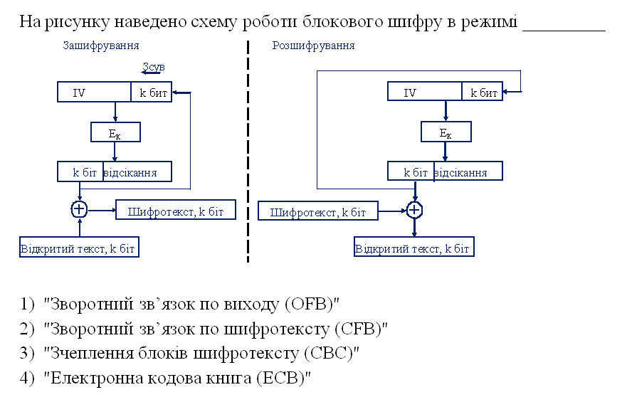
1) "Зворотний зв'язок по виходу (OFВ)"
2) "Зворотний зв'язок по шифротексту (CFВ)"
3) "Зчеплення блоків шифротексту (СВС)"
4) "Електронна кодова книга (ЕСВ)"
Електронна кодова книга - це
1) електронний шифрувальний блокнот
2) один з режимів роботи блокового шифру
3) назва одного з алгоритмів шифрування
4) збірка програмних засобів для шифрування
_
Процедура потрійного зашифрування з двома ключами описується функцією
1) C = DKI(EK2(EK1(M)))
2) C = EK1(DK2(EK1(M)))
3) C = EK2(DK2(EK1(M)))
4) C = EK1(EK2(EK1(M)))
Процедура потрійного розшифрування з двома ключами описується функцією
1) M=DK1(DK2(DK1(C)))
2) M = DK2(EK2(DK1(C)))
3) M =EKI(EK2(DK1(C)))
4) M = DK1(EK2(DK1(C)))
_
Процедура потрійного зашифрування з трьома ключами описується функцією
1) C = EK3(EK2(EK1(M)))
2) C = EK3(DK2(EK1(M)))
3) C = EK1(EK2(EK3(M)))
4) C = DK1(DK2(EK3(M)))
_
Процедура потрійного розшифрування з трьома ключами описується функцією
1) M = DK3(EK2(DK1(C)))
2) M = DK3(DK2(DK1(C)))
3) M = EK3(EK2(DK1(C)))
4) M = DK3(DK2(EK 1(C)))
_
Процедура пятикратного зашифрування з використанням трьох ключів описується функцією
1) C = DK2(DK1(EK3(EK2(EK 1(M)))))
2) C = EK2(EK 1(DK3(DK2(EK1(M)))))
3) C = EK2(DK1(EK3(DK2(EK1(M)))))
4) C = EK2(DK 1 (DK3(DK2(EK1(M)))))
_
Процедура пятикратного розшифрування з трьома ключами описується функцією
1) M = DK2(EK1(DK3(EK2(DK1(C)))))
2) M = EK2(EK1(DK3(EK2(DK1(C)))))
3)M = DR2(ER1(DK3(DK2(DE1(C)))))
4) M = EK2(EK1(DK3(DK2(DK1(C)))))
_
Процедура пятикратного зашифрування з використанням пяти ключів описується функцією
1) C = EK5(EK4(EK3(EK2(EK1(M)))))
2) C = DK5(DK4(EK3(EK2(EK 1(M)))))
3) C = EK5(EK4(DK3(DK2(DK 1(M)))))
4) C = EK5(DK4(EK3(DK2(EK1(M)))))
_
Процедура пятикратного розшифрування з пятьма ключами описується функцією
1) M = EK5(EK4(DK3(DK2(DK 1(C)))))
2) M = DK5(DK4(DK3(EK2(EK 1(C)))))
3) M = DK5(EK4(DK3(EK2(DK 1(C)))))
4) M = DE5(DKA(DK3(DK2(DK1(C)))))
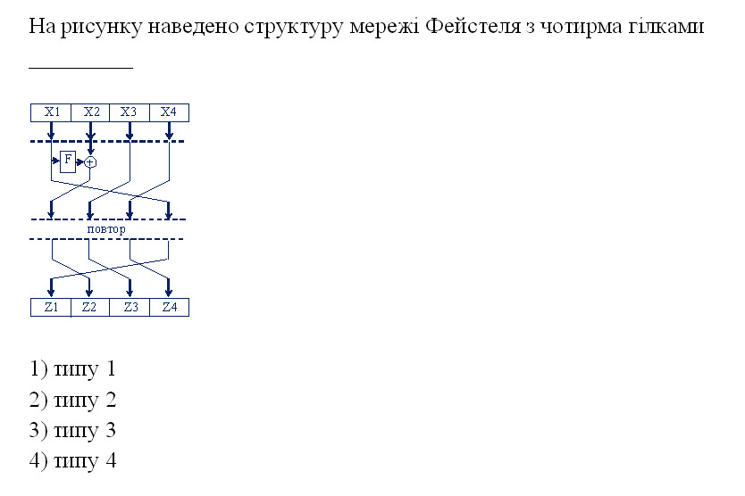
_
На рисунку наведено структуру мережі Фейстеля з чотирма гілками
1) типу 1
2) типу 2
3) типу 3
4) типу 4
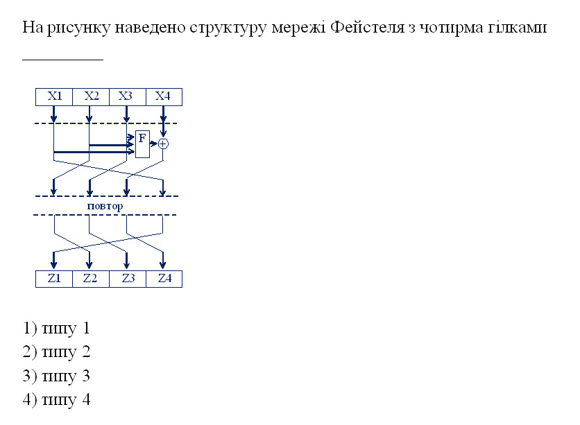
_
На рисунку наведено структуру мережі Фейстеля з чотирма гілками
1) типу 1
2) типу 2
3) типу 3
4) типу 4
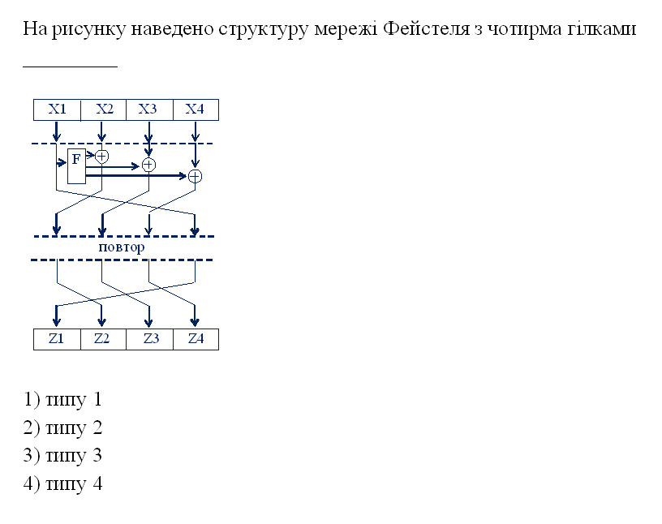
_
На рисунку наведено структуру мережі Фейстеля з чотирма гілками
1) типу 1
2) типу 2
3) типу 3
4) типу 4
_
Який блоковий шифр побудований на основі мережі Фейстеля з 2 гілками?
1) MARS
2) IDEA
3) TwoFish
4) TEA
_
Який блоковий шифр побудований на основі мережі Фейстеля з 2 гілками?
1) MARS
2) IDEA
3) BlowFish
4) SERPENT
_
Який блоковий шифр побудований на основі мережі Фейстеля з 4 гілками?
1) TEA
2) IDEA
3) BlowFish
4) AES
_
Який блоковий шифр побудований на основі мережі Фейстеля з 4 гілками?
1) AES
2) BlowFish
3) TwoFish
4) TEA
_
Міжнародним стандартом шифрування є алгоритм шифрування
1) MARS
2) IDEA
3) Blowfish
4) SERPENT
_
Cтандартом блокового шифрування США є алгоритм шифрування
1) AES
2) IDEA
3) RC6
4) Blowfish
_
Міжнародним стандартом шифрування є алгоритм шифрування
1) MARS
2) IDEA
3) Blowfish
4) SERPENT
_
Який алгоритм шифрування реалізує перетворення на основі двовимірного представлення даних і ключа?
1) AES
2) IDEA
3) RC6
4) Blowfish
_
S-боксом блокового шифру називають оператор
1) циклічного зсуву на змінну кількість бітів
2) циклічного зсуву на фіксовану кількість бітів
3) табличної заміни, за допомогою якої одна група бітів
відображається в іншу групу
4) перестановки бітів у блоці
_
Р-боксом блокового шифру називають оператор
1) циклічного зсуву на змінну кількість бітів
2) циклічного зсуву на фіксовану кількість бітів
3) табличної заміни, за допомогою якої одна група бітів
відображається в іншу групу
4) перестановки бітів у блоці
_
Довжина ключа криптоалгоритму AES залежить від
1) довжини блоку повідомлення
2) кількості раундів шифрування
3) версії криптоалгоритму АЕЗ
4) номера раунда
_
Довжина ключа криптоалгоритму AES
1) 128
2) 192
3) 256
4) будь-яка з наведених вище
Поняття системи секретного зв'язку
- Систему передавання інформації, в якій зміст переданої інформації ховається за допомогою криптографічних перетворень
- криптографічною системою зв'язку
- Процес криптографічного перетворення множини відкритих повідомлень у множину закритих повідомлень називають
- Процес криптографічного перетворення закритих повідомлень у відкриті з використанням секретного ключа називають
- Процес отримання відкритого повідомлення. що відповідає заданому7 закритому7, без знання секретного ключа називають
- Для зашифрування відкритого повідомлення потрібен
- Забезпечення цілісності інформації при її зберіганні та передаванні в разі втручання людини визначається
- Забезпечення цілісності інформації в умовах випадкового впливу фізичних факторів вивчається
- Скінченна множина знаків, використовуваних дня кодування інформації, називається
- Математичні методи дослідження стійкості криптоалогритмів і криптопротоколів вивчає
- Властивість інформації бути доступною тільки обмеженому7 колу7 користувачів інформаційної системи, у7 якій циркулює дана інформація, називають
- Властивість інформації чи програмного забезпечення зберігати свою структуру і/або зміст у процесі передавання і/або зберігання, називають
- Властивість інформації, яка полягає у строгій приналежності об'єкту, що є її джерелом, або том}’ об'єкту, від якого ця інформація прийнята, називають
- Здатність інформації чп деякого інформаційного ресурсу бути доступним дня кінцевого користувача згідно з ного тимчасовими потребами називають
- Характеристику шифру, що визначає складність ного дешифрування, називають
- Головним параметром криптосистем є показник
- надійності функціонування
- Криптографічна стійкість шифру повинна визначатися тільки
- секретністю алгоритм}’ шифрування
- Забезпечення конфіденційності даних означає
- неможливість відмови від авторства
- Методи криптоаналізу спрямовані на
- визначення рівня завадостійкості ключів
- Які шифри використовують два типи ключів та однобічні функції з лазівкою?
- Недолік систем з відкритим ключем -
- необхідність розповсюдження секретних КЛЮЧІВ
- Недолік систем з секретними ключами
- відносно низька продуктивність шифрування
- Недолік безключових систем
- однаковим блокам відкритих даних відповідають різні блоки закритих даних
- У криптосистемах з відкритим ключем за допомогою закритого (приватного) ключа здійснюється
- У криптосистемах з відкритим ключем за допомогою відкритого ключа здійснюється
- Два ключі використовуються в криптосистемах
- Шифр називається симетричним, якщо
- перший та останній символи криптограми однакові
- Реалізація симетричного шифру передбачає використання
- відкритого ключа з боку одержувача криптограми
- Шифр має теоретично доведену СТІЙКІСТЬ, якщо
- розкриття шифру можливо тільки за умови, що криптоаналіз має нескінченно великі обчислювальні ресурси та необмежений час
- У криптографії з відкріпим ключем
- для зашифрування викроистовується секретний ключ, а для розшифрування - відкритий
- Електронний цифровий підпис передбачає використання
- відкритого ключа для підписування і секретного ключа для верифікації
- Криптосистем!! з відкріпим ключем рекомендують використовувати
- розпізнавання користувачів за клавіатурним почерком
- Криптосистеми з відкріпим ключем використовують лише для захисту даних невеликого обсягу тому, що
- відкриті ключі мають дуже часто змінюватися
- Криптографічна стійкість алгоритм}’ RSA базується на складності алгоритм}’
- перевірки на простоту великих чисел
- Система з секретними ключами - це п'ятірка SCK={M,K,C,E,D}, де М=Ш} -
- множина алгоритмів зашифрування
- Система з секретними ключами - це п'ятірка SCK={M,K,C,E,D}, Де К={^} -
- множина алгоритмів зашифрування
- Система з секретними ключами - це п'ятірка SCK={M,K,C,E,D}, Де С={С,} -
- множина алгоритмів зашифрування
- Система з секретними ключами - це п'ятірка SCK={M,K,C,E,D}, де Е={£„} -
- множина відкритих повідомлень
- Система з секретними ключами - це п'ятірка SCK={M,K,C,E,D}, де D={}
- множина алгоритмів зашифрування
- 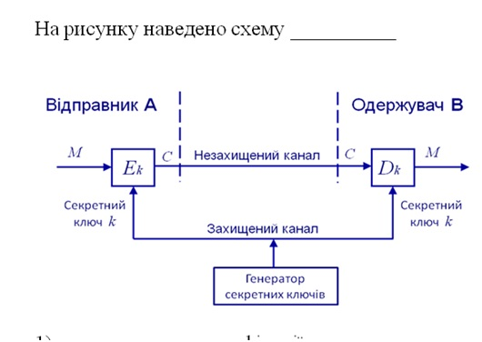
- Системі з відкритими ключами
- Криптографічна стійкість безключової системи базується на складності
- обчислення символ}’ Лежандра
Алгебраїчні системи і алгебри
- Закон, за яким двом (різним чи однаковим) елементам [i]a[/] і [i]b[/] множини , взятим у певному порядку, ставиться у відповідність однозначно визначений елемент даної множини, називають
- бінарною алгебраїчною операцією, заданою на множині
- Якщо кожному елементу множини за певним правилом чи законом ставиться у відповідність єдиний елемент цієї самої множини, то кажуть, що в даній множинні введено
- Правило, за яким кожній парі див. мал. ставиться у відповідність єдиний елемент у множині називають
- внутрішнім законом композиців
- Правило, за яким кожній парі див. мал. ставиться у відповідність єдиний елемент у множині називають
- зовнішнім законом композиції
- Якщо для будь-якого див.мал?
- нейтральним елементом відносно операції *
- Якщо виконується рівність [i][b]a*e=a [/][/] , то елемент [i]e[/] називають
- правостороннім нейтральним елементом відносно операції *
- Якщо виконується рівність [i][b]e*a=a [/][/] , то елемент [i]e[/] називають
- лівостороннім нейтральним елементом відносно операції *
- Нейтральний елемент відносно операції додавання ⊕ називають
- Нейтральний елемент відносно операції множення ⊗ називають
- Якщо для будь-якого а∈А виконується а^'*а=е і а*а^'=е то елемент а^' називають
- симетричним елементу [b][i]aЄА[/][/] відносно операції *
- Якщо виконується рівність [b][i]a'*a=e[/][/] ,то елемент [b][i]a'[/][/] називають
- лівостороннім симетричним елементу [b][i]aЄА[/][/] відносно операції *
- Якщо виконується рівність [b][i]a*a'=e[/][/] ,то елемент [b][i]a'[/][/] називають
- правостороннім симетричним елементу [b][i]aЄА[/][/] відносно операції *
- 14. Елемент множини [b]A[/] , симетричний елементу [b][i]a[/][/] відносно операції додавання [b][i]+ в колі[/][/], називають
- Елемент множини A, симетричний елементу a відносно операції множення [b][i]x в колі [/][/], називають
- Трійку об’єктів
- Двійку об’єктів
- Двійку об’єктів
- Якщо множина [b]A[/] - скінченна, то алгебру мал.

- Алгебру мал.
з одною бінарною алгебраїчною операцією *, що визначена на G називають
- правостороннім нейтральним елементом відносно операції *
- Якщо операція * , що задана на множині G , є додаванням, то групу G[sup]~[/] називають
- Якщо операція * , що задана на множині G , є множенням, то групу G[sup]~[/] називають
- Алгебру мал. з двома бінарними алгебраїчними операціями * і / на К називають
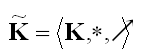
- Два відмінних від нуля елементи множини К , що є носієм алгебри мал. добуток, яких дорівнює нулю, називають
Складність алгоритмів
- Складність алгоритму – це функція, значення якої залежить від
- розмірності n-даних задачі
- кількісну оцінку обчислювальних ресурсів, потрібних для успішного розв’язання задачі називають
- складністю алгоритму розв’язання задачі
- складність алгоритму що визначається кількістю операцій, які потрібно виконати для реалізації алгоритму, називають
- складність алгоритму, що визначається обсягом пам’яті , потрібним для реалізації алгоритму, називають
- складність алгоритму, що визначається обсягом даних, які потрібно передати при реалізації алгоритму в розподілених мережах, називають
- комунікаційною складністю
- складність алгоритму що визначається кількістю елементів мікросхеми або кількістю процесорів, які потрібні для реалізації алгоритму , називають
- алгоритм, що має поліноміальну часову складність, називають
- клас ефективно розв’язуваних задач – це клас
- яка часова складність обчислення значення ak mod m за бінарним алгоритмом піднесення до степеня?
- для розв’язання якої задачі існують алгоритму з поліноміальною складністю?
- зашифрування C = Me mod N відкритого тексту М в криптосистемі RSA
- для розв’язання якої задачі не існують ефективні алгоритми?
- факторизація великих чисел
- для розв’язання якої задачі не існують ефективні алгоритми?
- обчислення значення функції Ейлера великого числа
- для розв’язання якої задачі не існують ефективні алгоритми?
- дискретного логарифмування великих чисел
- клас алгоритмів що мають оцінку складності O(log2n), називають
- клас алгоритмів що мають оцінку складності O(n), називають
- клас алгоритмів що мають оцінку складності O(nm), називають
- клас алгоритмів що мають оцінку складності O(an), називають
- рисунку зображено граф зміни станів____ машини Тюрінга
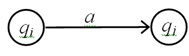
- детермінованої однострічкової
- на рисунку зображено граф зміни станів ___ машини Тюрінга
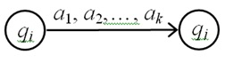
- детермінованої багатострічкової машина
- на рисунку зображено граф зміни станів ____ машини Тюрінга
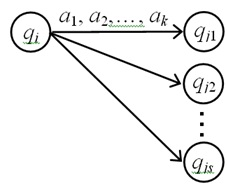
- на рисунку зображено граф зміни станів ______ машини Тюрінга
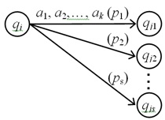
- клас задач розв’язуваних детермінованими алгоритмами за поліноміальний час, це клас
- клас задач розв’язуваних недетермінованими алгоритмами за поліноміальний час , це клас
- клас задач розв’язуваних імовірнисними алгоритмами за поліноміальний час, це клас
Luzh Тест ПК потокові шифри
- Гама – це
- Бітова послідовність, що накладається на потік відкритих даних
- Потокове шифрування відбувається шляхом
- Накладання гами на потік відкритих даних
- накладання гами на потік відкритих даних відбувається шляхом
- чому послідовність яку генерує регістр зсуву з лінійним зворотним зв’язком, не рекомендують використовувати як гаму потокового шифру?
- за допомогою алгоритму Берлекемпа – Мессі можна розкрити ключ
- укажіть одну з основних вимог до системи потокового шифрування
- генератори гами на передавальній та приймальній сторонах мають бути синхронізовані
- потокові шифри рекомендують використовувати
- для шифрування даних у режимі реального часу
- на рисунку наведено структурну схему генератора гами, який називають

- Генератором з комбінуванням виходів
- на рисунку наведено структурну схему генератора гами, який називають
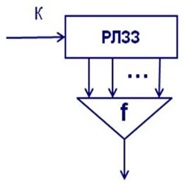
- на рисунку наведено структурну схему генератора гами, який називають
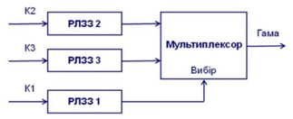
- Який відсоток біттів гами на виході генератора Геффе
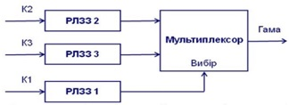
- на рисунку наведено структурну схему генератора гами, який називають
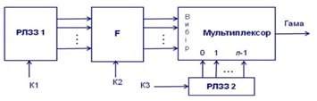
- рисунку наведено структурну схему генератора гами, який називають
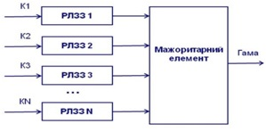
- рисунку наведено структурну схему генератора гами, який називають

- на рисунку наведено структурну схему генератора гами, який називають
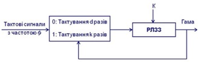
- Генератор Рюпеля, що самопроріджується
- Скна рисунку наведено структурну схему генератора гами, який називають
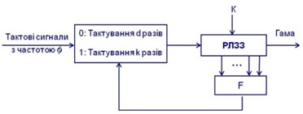
- Генератор Чамберса і Голмана, що самопроріджується в